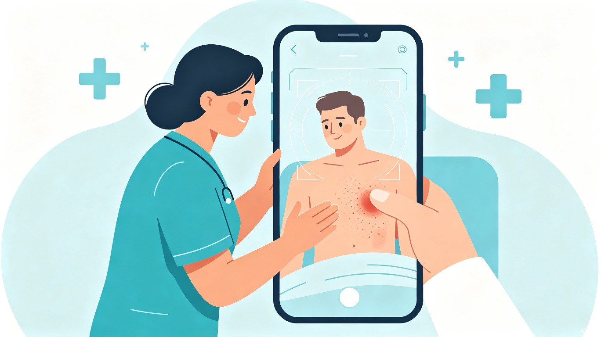

一、创意名称与介绍
创意名称
褥疮快检 — 基于 AI 图像识别的慢性压疮智能筛查小程序
想解决什么问题
帮助护理人员和家属通过手机拍照快速判断患者是否已产生褥疮、处于哪个分期，并自动记录变化趋势，降低漏检率和误判率。
为什么会想到做这个
褥疮（压疮）在长期卧床患者中发生率极高，但早期识别高度依赖护士的肉眼经验——不同护理人员的判断标准不一，夜间和交接班时尤其容易漏检。
更关键的是，大量居家卧床的老人同样面临褥疮风险，而他们的家属往往缺乏专业判断能力。小问题拖成大问题才送医，治疗成本和患者痛苦都成倍增加。如果能用手机拍一张照片就给出初步分级建议，就能让早期发现变得触手可及。
大概是什么产品
一个基于 AI 图像识别的微信小程序，核心功能是拍照识别褥疮分期 + 护理记录管理 + 翻身提醒。
二、目标用户及痛点
面向哪些用户
在什么场景下使用
机构场景：护理人员在每日查房、翻身护理时，对患者受压部位（骶尾、足跟、肘部等）拍照，小程序即时给出是否有褥疮及分期建议。
居家场景：家属在不确定老人伤口是否严重时，拍照获取初步判断，决定是否需要就医，避免"小伤口拖成大问题"。
核心数据
当前痛点
- 经验依赖，标准不一：年轻护士或经验不足的护理员容易把早期红斑误判为正常皮肤，也可能漏掉深层组织损伤。
- 记录断层，无法追踪：纸质记录不连续，交接班信息丢失，无法直观对比伤口变化趋势，延误最佳干预时机。
- 家属盲区，延误就医：居家照护者缺乏专业判断能力，往往等到伤口恶化、出现感染迹象才送医，治疗成本和患者痛苦大幅增加。
- 夜间漏检风险高：夜班人手少、光线差，压疮高发时段反而最容易被忽视。
三、价值与意义
效率提升
拍照即判，把原来需要专业护士花几分钟肉眼评估的工作压缩到几秒。普通护理员甚至家属也能完成初步筛查，把专业护士的精力释放到真正需要处理的病例上。
降低漏检
AI 辅助识别不依赖个人经验，夜间、交接班等薄弱时段也能保持一致的筛查质量，有效降低漏检率。
趋势追踪
每次拍照自动归档，生成伤口变化时间线，让护理效果"看得见"，为调整护理方案提供数据支撑。
社会价值
III期以上压疮的治疗成本是预防成本的 5-8 倍。这个工具本质上是把"事后治疗"前移到"事前预防"，对老龄化社会的居家和机构护理有实际意义。
一句话总结：褥疮快检不是要替代专业护士，而是让每一次翻身护理都多一双"AI 眼睛"，让居家照护的家属多一份安心，让早期发现不再是少数人的经验特权。